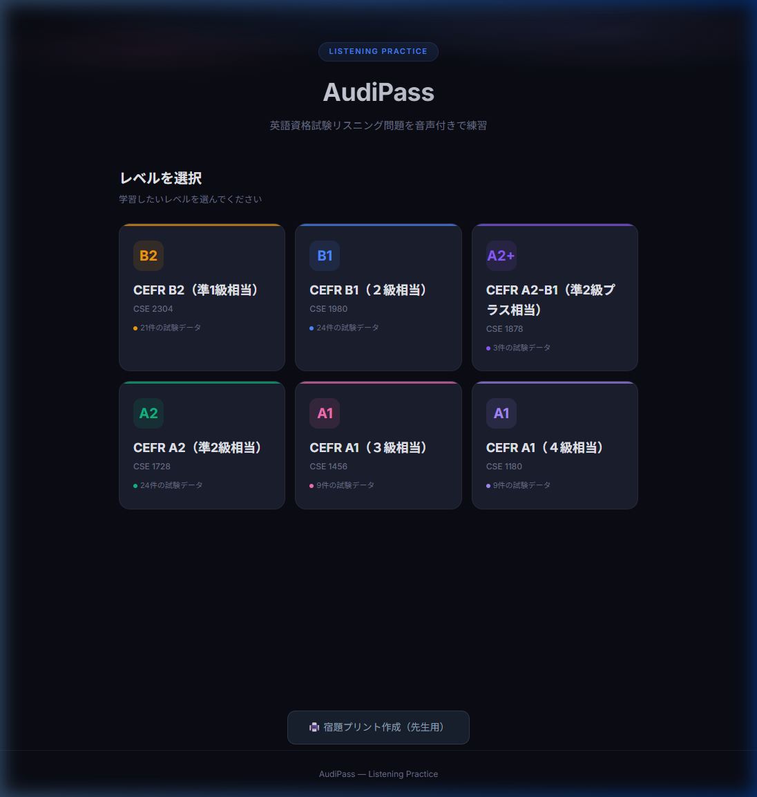
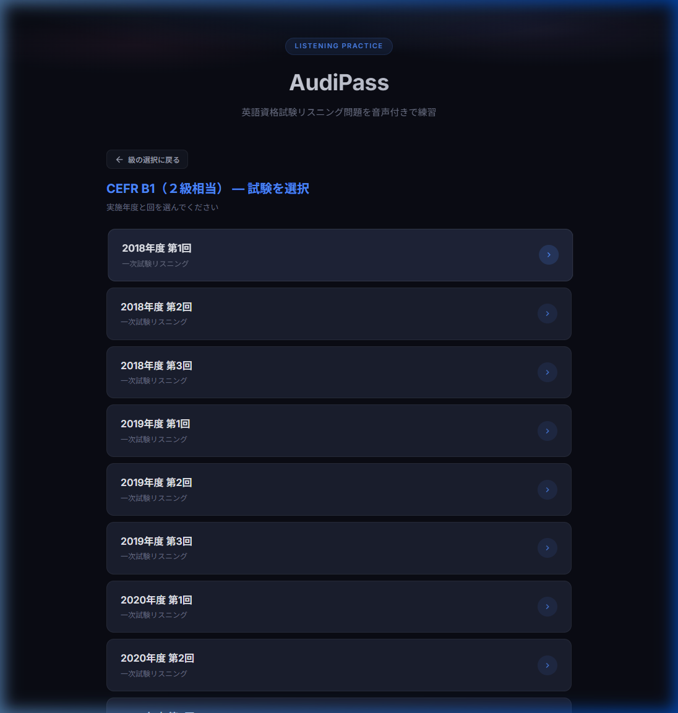
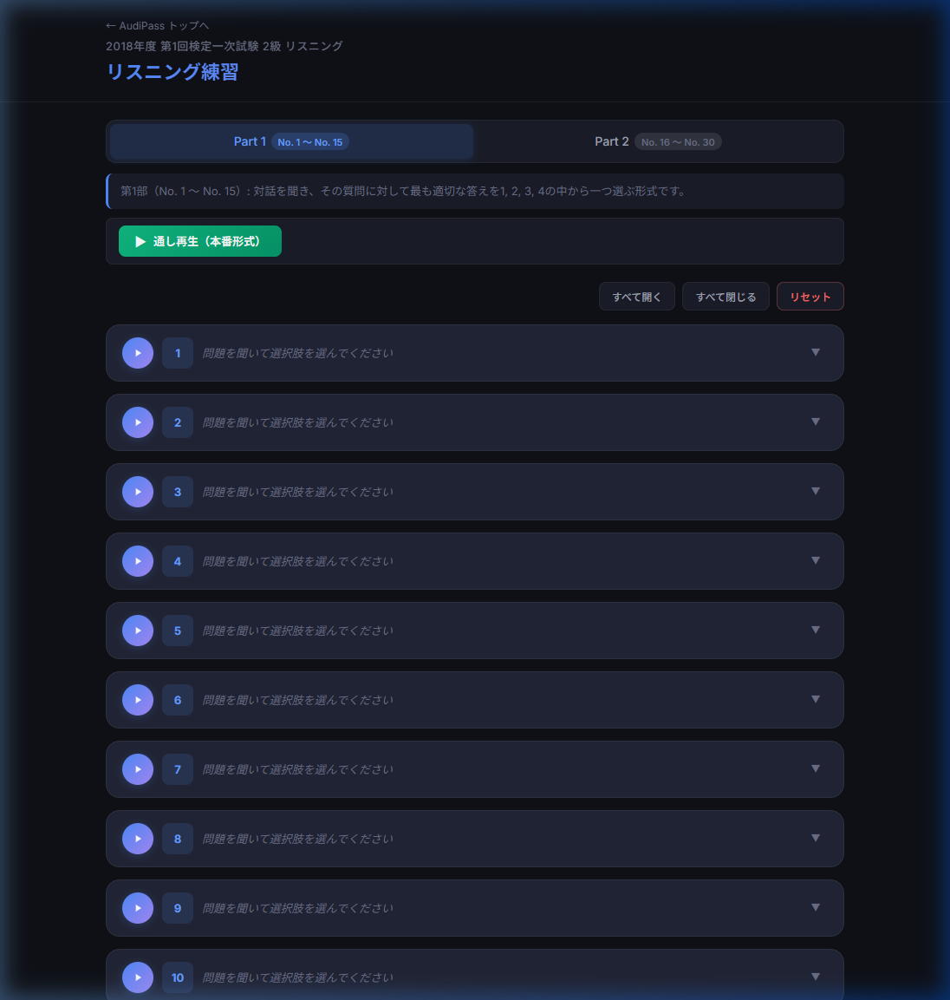
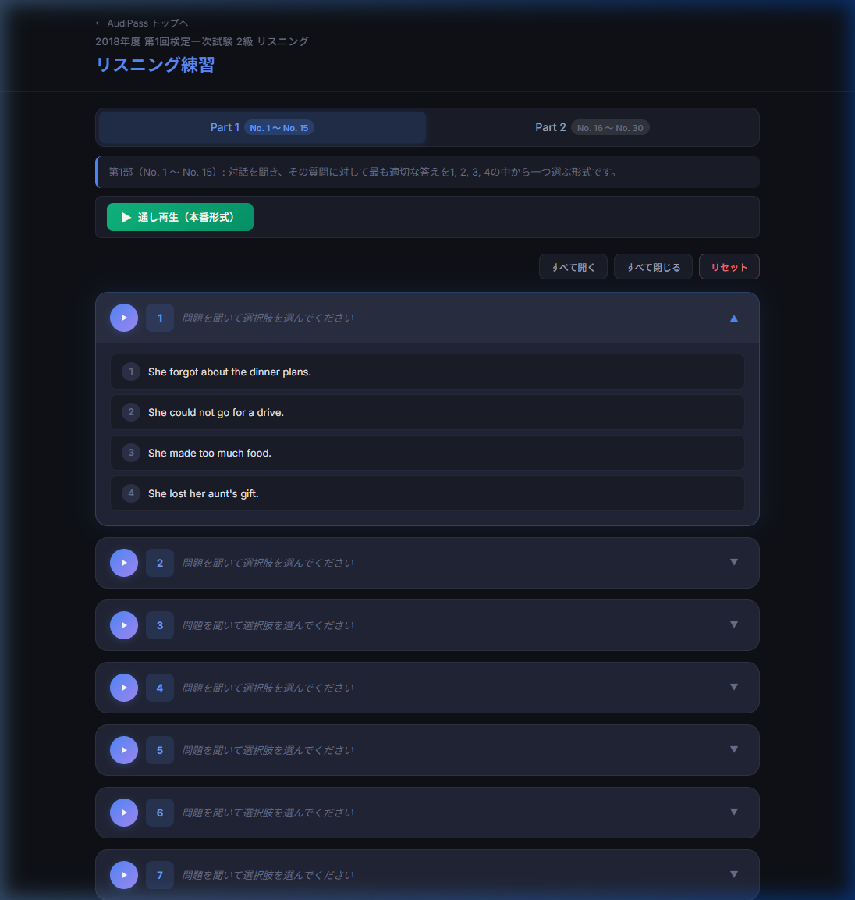

英検リスニング過去問を音声付きで効率的に練習するためのWebアプリです
← トップページに戻るAudiPass は、英検リスニング過去問を音声付きで繰り返し練習できるWebアプリです。 本番と同じ音声を使い、問題ごとの個別再生や通し再生（本番形式）を切り替えて、 効率的にリスニング力を強化できます。
リスニング力の向上には、繰り返しの練習が不可欠です。AudiPass は以下の課題を解決します：
AudiPass は以下の級に対応しています。トップページから級を選択してください。
| 級 | CEFR | 試験データ数 |
|---|---|---|
| B2 準1級 | B2 | 21回分 |
| B1 2級 | B1 | 24回分 |
| A2+ 準2級プラス | A2-B1 | 3回分 |
| A2 準2級 | A2 | 24回分 |
| A1 3級 | A1 | 9回分 |
| A1 4級 | A1 | 9回分 |


試験を選ぶと、リスニング問題のクイズ画面が表示されます。 画面上部にパート切り替えタブがあり、各パートの問題を切り替えられます。

画面上部の「▶ 本番形式で通し再生」ボタンを押すと、 試験本番と同じ順番・同じペースで音声が再生されます。 時間配分に慣れるために、まずは通しで練習しましょう。
各問題カードには個別の再生ボタンがあります。 苦手な問題だけを何度でも繰り返し聞くことができます。 シークバーをドラッグして、聞きたい部分にジャンプすることも可能です。

選択肢をクリックすると、すぐに正誤が判定されます。 正解の場合は緑色、不正解の場合は赤色で表示され、正解番号が明示されます。
まず「本番形式で通し再生」で全問を通して聞き、時間配分に慣れる
各問題の選択肢をクリックして解答。すぐに正誤がフィードバックされる
間違えた問題の個別再生ボタンで繰り返し聞き、スクリプトで英文を確認
弱点を克服したら、再度通しで聞いて全問正解を目指す
| ボタン | 機能 | 説明 |
|---|---|---|
| ▶ 本番形式で通し再生 | 通し再生 | 試験本番と同じ順番で全問の音声を連続再生します |
| ▶（問題ごと） | 個別再生 | 各問題の音声だけを再生・一時停止します |
| すべて開く | 全展開 | 全ての問題カードを展開して選択肢を表示します |
| すべて閉じる | 全閉じ | 全ての問題カードを閉じてコンパクトにします |
| リセット | 解答リセット | 全ての解答をクリアして最初からやり直します |
| 🖨️ 宿題プリント作成 | 印刷（先生用） | 問題を印刷用に整形して出力します（トップから） |
トップページ下部の「🖨️ 宿題プリント作成（先生用）」リンクから、 問題をプリントアウトして生徒に配布できます。 級・年度・パートを選んで、必要な範囲だけを印刷できるため、 授業や宿題の教材作成に最適です。